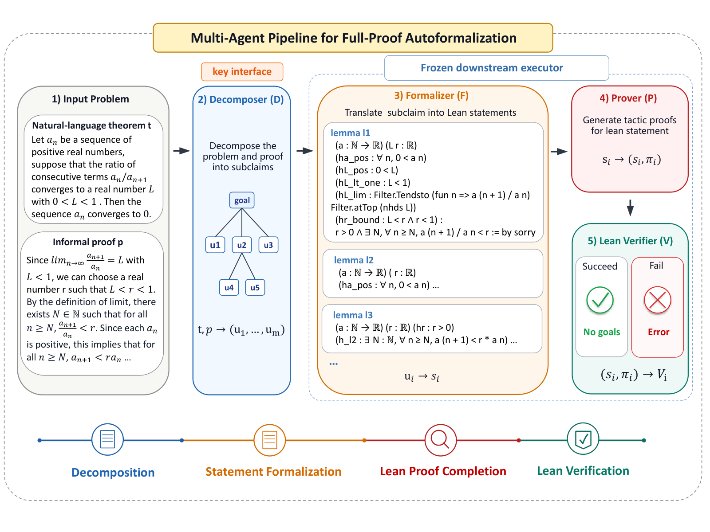
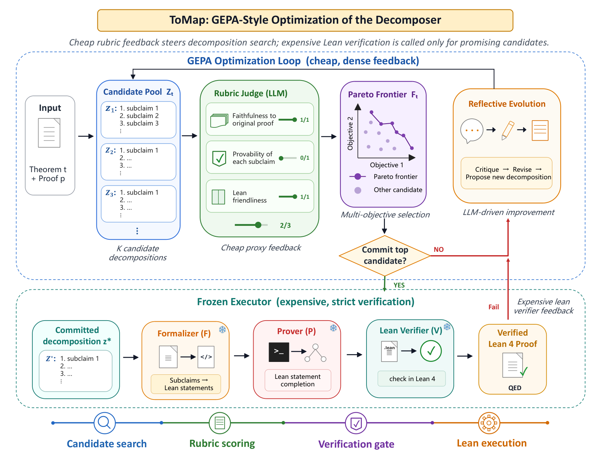

Multi-agent pipeline formalizes natural-language proofs into Lean proof files and uses the Lean verifier to check them and guide decomposition optimization.
Abstract
Full-proof autoformalization bridges extensive mathematical proofs in natural language with formally validated reasoning, offering a pathway to elevate the ceiling of verifiable mathematical reasoning. Unlike statement-level formalization, proof autoformalization is a long-horizon challenge requiring coordination of claims, contexts, and dependencies across many proof steps, yet has only recently come under focused study. Current approaches either rely on costly model training or apply excessive, unguided repair at inference time. To this end, we introduce ToMap, a multi-agent framework that structures proof autoformalization as a Decomposer-Formalizer-Prover pipeline with efficient test-time optimization guided by formal verification and semantic rubrics for proof quality. Rather than distributing test-time compute across all agents, we perform bottleneck analysis and identify the Decomposer as the critical bottleneck: the quality of its atomic, self-contained proof units directly determines whether downstream agents can successfully formalize and prove each step. ToMap therefore treats the Formalizer and Prover as downstream executors and efficiently focuses test-time compute on Decomposer refinement. This refinement follows a loop inspired by GEPA, evolving prompts over candidate decompositions and using formal verification progress together with semantic proof rubrics to define a Pareto frontier that guides the next decomposition update. Experiments on ProofFlowBench show that ToMap improves over the best previous method by 19.0% when evaluated by both syntactic correctness and semantic faithfulness, while requiring lower test-time cost. Scaling analysis shows that most gains emerge within a few iterations of decomposition evolution, guiding test-time budget selection.
Problem
Full-proof autoformalization means translating complete informal proofs into verified Lean proofs. It is a long-horizon task that requires coordinating claims, contexts and dependencies across many steps. Existing methods either need costly training or spend test-time compute on unguided repair.
Approach
ToMap structures the task as a Decomposer-Formalizer-Prover multi-agent pipeline, with Lean as the external verifier. A weak-link analysis gives the same Lean diagnostics to only one editable stage at a time, and identifies the Decomposer as the most recoverable stage. ToMap then runs a GEPA-style evolutionary loop over candidate decompositions, scored by LLM-judged rubrics for faithfulness, provability and Lean-friendliness. A Pareto frontier over these scores guides the next update, and only candidates passing a rubric gate are sent to the Formalizer, Prover and Lean for verification.

Figure 1: Full-proof autoformalization as a multi-agent pipeline. A natural-language theorem and informal proof are first decomposed into proof units with local context. The downstream executor then formalizes each unit, proves each local obligation, and verifies them.

Figure 3: ToMap : GEPA-style test-time optimization of proof decompositions. ToMap concentrates test-time compute on the Decomposer interface while keeping the downstream Formalizer-Prover-Lean executor fixed. It maintains a pool of candidate natural-language decompositions, scores them with proof-quality rubrics measuring semantic faithfulness, atomicity, self-containedness, and dependency consis
Results
On ProofFlowBench, ToMap improves combined syntactic correctness and semantic faithfulness by 19.0% over the best prior method, at lower test-time cost. On miniF2F it also outperforms training-based and training-free baselines. Most gains appear within a few iterations of decomposition evolution.